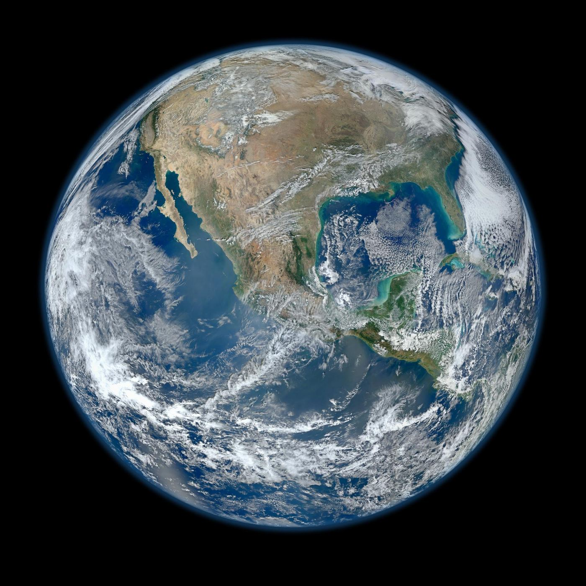

A science company whose laboratory is space.
Science Systems and Applications, Inc. — founded in 1977, family-led, and headquartered in the Aerospace Building beside NASA Goddard. For nearly fifty years we have been the preferred partner of the agencies that ask the hardest questions about our planet and the universe.
Transforming ideas into knowledge.
Science Systems and Applications, Inc. (SSAI) is a science, engineering, and information-analytics company founded in 1977.
For more than four decades we have been the preferred partner of the agencies that ask the hardest questions about our planet and the universe — transforming ideas into knowledge through innovation, inspiration, and discovery.
A certified woman-owned, family-led small business headquartered in the Aerospace Building beside NASA Goddard Space Flight Center, SSAI brings together expert scientists, engineers, data analysts, and IT professionals who share one commitment: to provide solutions for the unique needs of each customer — and to leave the planet a better place than we found it.
 NASA / Goddard Space Flight Center / Bill Hrybyk
NASA / Goddard Space Flight Center / Bill Hrybyk
Why we do the work.
Our customers' preferred partner
To be our customers' preferred partner in transforming ideas into knowledge through innovation, inspiration, and discovery.
To improve life on Earth
To improve life on Earth through innovation and leadership in science, engineering, and data analytics, as we answer important societal and scientific questions.
The Sun, the Earth, and the universe.
SSAI helps the world's science agencies see across the full reach of observation — from the star that drives our weather, to the planet we are sworn to protect, to the deep universe beyond. Three domains of science, pursued with one purpose: to turn the view from space into understanding on the ground.
The Sun
We help observe the star at the center of it all — its flares, its storms, and the space weather that ripples outward to touch satellites, power grids, and life on Earth.
The Earth
Our largest domain. Climate and oceans, ice and atmosphere — SSAI engineers the instruments, operates the missions, and assimilates the data that let agencies measure a changing planet and act on what they find.
The Universe
From Lucy and JWST to Roman, Chandra, and XRISM, we help turn light from distant worlds and ancient galaxies into the data that rewrites what we know about the cosmos.
Leave it better than we found it.
Every instrument we integrate, every mission we operate, every dataset we assimilate points back to one place. Earth is our largest domain — and our deepest responsibility. The data SSAI helps create informs how the world understands storms, oceans, ice, and a changing climate.
A passion for science.
A true passion for science led to SSAI's founding as a one-person company. From that humble beginning, SSAI has grown organically into the organization it is today.
Founders Om and Sara Bahethi worked over four decades to create and maintain a culture that supports a spirit of scientific exploration and innovation, respect for our planet and its environment, and a desire to make things better for humankind.
In 2021, Chairman Om and Secretary Saraswati Bahethi passed leadership to their son, Praveen. The family-centered values that were so important at our beginning remain central to who we are today.
 NASA / Goddard Space Flight Center
NASA / Goddard Space Flight Center
The legacy of Dr. Om P. Bahethi.
For nearly 48 years, Dr. Om P. Bahethi built SSAI into a beacon of excellence in Earth and space science.
His work with NASA and NOAA embodied a lifelong passion for discovery. That passion endures beyond the company — through the Bahethi Family Foundation, scholarships, and a commitment to STEM equity that carries his belief forward: that science, pursued with integrity, makes the world better.

NASA / Goddard Space Flight CenterDeep science, operational discipline.
SSAI is led by a team that pairs deep science with operational discipline — a family at its center, and decades of agency experience around it.
Dr. Shilpa Bahethi, MD
A member of the Bahethi family and the company's former corporate treasurer, whose medical background sharpens SSAI's edge where science, technology, and health intersect.
Praveen Bahethi
An executive with a background managing technology firms, committed since 2021 to returning the company to its focus — scientific and engineering innovation.
Oreste Reale, Ph.D.
Oversees the science SSAI researchers conduct; 25 years at NASA Goddard focused on atmospheric dynamics, hurricanes, weather forecasting, and the data assimilation of hyperspectral infrared sensors.
Kevin Cooley
Former NOAA–DHS liaison who directed the National Weather Service Office of Planning and Programming — leading 1,500 personnel and $650M in annual mission capabilities. Federal Senior Executive Service, 2002–2025.
Rachit Mahajan
Two decades of expertise in finance, accounting, business systems, and taxation, anchoring the discipline behind every mission SSAI takes on.
Meet everyone
From the executive team to the scientists and engineers behind 150+ missions — see the people who make SSAI's work possible.
Five values, every mission.
Five values hold across every mission we touch — the constant that connects a one-person company in 1977 to the institution SSAI is today.
Trust
We instill trust through honesty and transparency.
Integrity
We exercise scientific integrity and uncompromising engineering as the foundation of our professional ethics.
Teamwork
We build strong teams to execute our business practices.
Passion
We innovate and evolve by engaging our collective sense of wonder and enthusiasm.
Accountability
We take ownership of our decisions and everything we do.
Held to standard
CMMI Level 3 · ISO 9001:2015 · SBA-certified small business — the marks of a company that pairs scientific ambition with operational rigor.
Science and Technology with Passion.
For nearly fifty years, turning the view from space into understanding on the ground. See where that passion takes us next.